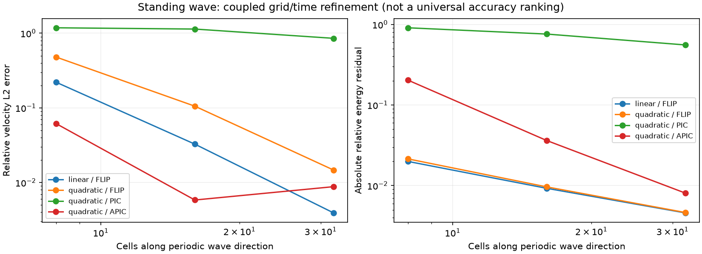

Updated mechanics, interpolation, transfers, and diagnostics¶
The current solver implements the first four stages in the implementation checklist: verification/diagnostics, deformation and volume evolution, selectable interpolation, and APIC. Later capabilities remain explicit backlog items, not implied guarantees.
Selecting a configuration¶
For the new combined example:
uv run --locked python MPM.py modern_ball
This uses updated mechanics, quadratic B-splines, APIC, and dynamic timestepping.
The smaller ball example retains linear interpolation and FLIP, but also uses
updated mechanics. In a custom Params constructor, select:
self.mechanics = 'updated' # default; historical alternative: 'legacy'
self.interpolation = 'quadratic' # default: 'linear'
self.transfer = 'apic' # default: 'flip'; alternatives: 'pic', 'apic'
self.time_stepping = 'dynamic'
self.CFL = 0.15
APIC is supported with quadratic interpolation and planar motion (v_z=0,
initial_C has zero z row/column). The known degenerate-support instability of
linear APIC is avoided by rejecting that combination explicitly. For a PIC/FLIP
blend, use transfer='flip' and pic_fraction between zero (pure FLIP, the
default) and one (PIC). Changing transfer changes numerical dissipation.
mechanics='legacy' explicitly selects the older constitutive equations,
fixed particle volume, reconstructed particle density, Lie correction, and
acceleration-only FLIP update. It is for historical comparison, not the
recommended mechanics. Scalar parity tests and the old performance comparison
select this mode. The default changes numerical results deliberately.
Deformation and physical density¶
Each deformable particle stores F (3 by 3), J=det(F), reference volume V0,
and current volume V. With the gathered velocity gradient L, the update is
F_new = exp(dt L) F_old
V = J V0
rho = m/V
The exponential preserves pure rotation and avoids the artificial volume growth
of F_new=(I+dt L)F_old under spin. Invalid/nonfinite or nonpositive determinants
fail with material, timestep, and particle indices. Particle mass remains constant
except for explicit inlet/outlet events. Inlets start from F=I, J=1, fresh
material history, and their specified initial state; every persistent field moves
with particle rows through removal and insertion.
The reference is the input configuration: pressure initialisation supplies an initial prestress, not an inferred pre-deformation. Physical density follows mass/volume; nodal mass divided by nodal control volume remains a separate grid occupancy diagnostic. The old occupancy-based Pouliquen density cutoff is absent in updated mode. No separate porosity or critical-state dilation law is implied.
Stress and work conventions¶
All Cauchy stresses are tension positive. Geometry remains 2D/plane strain, with three-component vectors and 3-by-3 constitutive tensors.
Elasticity in updated mode is compressible, isochoric/volumetric neo-Hookean
elasticity with reference prestress S0. For b=F F^T, bbar=J^(-2/3)b,
W0 = G/2 (tr(bbar)-3) + K/2 (ln J)^2 + S0:(F^T F-I)/2
sigma = [G dev(bbar) + K ln(J) I + F S0 F^T]/J
elastic_energy = V0 W0
S0 is the initial Cauchy stress at F=I, stored as reference_stress.
This recovers the supplied initial stress and isotropic linear elasticity about
an unstressed reference. Energy is measured relative to that reference;
prestress work can make its change negative. The Cauchy stress matches the
energy derivative, which is checked by finite differences.
Von Mises now uses a standard perfectly plastic J2 return map. Supply
yield_stress in Pa, or retain k with yield_stress=sqrt(3)*k. The old s
exponent only applies in legacy mode. DP/DP-rate retain the audited return
maps. These rate-form plastic solids use the symmetric spin split and accumulate
plastic strain and nonnegative plastic work. Their elasticity remains
hypoelastic, not a multiplicative finite-strain plasticity formulation. Their
quadratic elastic-energy diagnostic is an estimate; finite-strain plasticity
remains on the implementation checklist.
Viscous/Bingham/Pouliquen/linear-mu fluids prescribe current viscous stress.
They use engineering shear rate sqrt(2 D':D'), bulk-pressure increments
K tr(dstrain), and nonnegative shear/bulk dissipation. Pouliquen uses its bounded
friction function and actual current density. No Lie correction is added to these
algebraic stresses. This changes the former original-five conventions.
Bulk elastic work is integrated along the exponential volume change, including
the no-tension cutoff where present; pressure history excludes the instantaneous
bulk-viscous mean stress. Local rheology still needs application-specific
calibration and has the limitations described in the constitutive audit.
Interpolation and physical boundaries¶
The stencil interface returns node indices, weights, gradients, and physical node-minus-particle offsets. Linear interpolation uses four entries; quadratic uses nine. Force mapping, diagnostics, deformation, momentum, composition, and segregation all use the returned support size.
The quadratic interior uses tensor products of cardinal quadratic B-splines. At physical boundaries, ghost values are linearly extrapolated through the boundary nodes, and their basis contributions are combined onto physical nodes. In the outer half-cell this reduces to linear weights. The join is C1, weights are nonnegative, and partition/affine completeness are preserved, including at corners. This is a boundary-modified quadratic basis; it is not an open-knot basis, truncated-and-normalised cardinal basis, or finite-domain GIMP. The method still has quadrature and boundary errors. The motivation for smooth interior basis functions is discussed by Steffen, Kirby and Berzins.
Periodic x support deposits onto unique nodes while retaining unwrapped local offsets for affine transfer. The stored endpoint column remains a duplicate for existing grid operators. Global angular momentum computed from wrapped particle positions is not an unwrapped periodic-domain angular budget.
Missing mass support is not silently repaired by renormalising weights. Constant velocity is extended onto massless derivative-only support so a sparse particle at a grid node does not acquire spurious strain under translation. APIC also uses its resolved affine extension. Such support is reported; nonzero stress forces requiring massless support fail explicitly. Add particle coverage or review the mass threshold instead of discarding forces.
Matched APIC transfers¶
Each APIC particle carries affine momentum B (stored as affine_momentum),
not just a velocity gradient copied from the stress calculation. With offsets r,
D = sum_i N_i r_i r_i^T
C = B D^+
q_i += m N_i (v + C r_i)
v_new = sum_i N_i v_i_new
B_new = sum_i N_i v_i_new r_i^T
D^+ is the pseudoinverse on resolved planar support. This is the matched
explicit APIC transfer described in the APIC work,
using the current stencil moment rather than assuming an interior constant.
Optional material initial_C is (3,3) or (n,3,3) and seeds B=C D.
The particle’s angular momentum includes the antisymmetric part of m B.
Omitting this term gives an incorrect conservation check.
Rank-deficient support accepts resolved affine states. If a changed support would discard a nonzero unresolved affine component, the transfer fails rather than silently losing angular momentum. There is no arbitrary inverse-moment ridge. APIC reduces PIC’s transfer dissipation; it does not remove all remapping, integration, or quadrature errors.
Updated FLIP takes the complete nodal velocity change from pre-constraint P2G to the final grid velocity. Thus a wall’s velocity projection reaches particles. The historical acceleration-only update could keep incoming particle velocity while the wall repeatedly removed the same nodal momentum.
Timestep estimates and diagnostics¶
Dynamic stepping additionally considers particle speed, elastic waves, viscosity,
segregation advection/diffusion, and material-specific limits before the first
step and subsequently. CFL scales the central estimates. Neo-Hookean waves use a deformation-dependent norm bound on the reference
energy Hessian, pushed to the spatial configuration; plastic solids use their
elastic wave estimate. These and the explicit transport estimates remain local
restrictions, not a universal nonlinear stability proof.
Plastic relaxation is integrated locally by the implicit return map.
Static stepping retains the supplied dt and reports its estimated restrictions.
Set timestep_policy='enforce' to reject a static step above those estimates;
it does not silently change dt. Dynamic stepping limits the step instead.
A floating-point-sized final-time remainder no longer produces an extra step.
Diagnostics run independently of plotting. Inspect L.diagnostics.last or
.history. Set diagnostics=False to disable them, or diagnostics_stride=100
to retain fewer rows while still accumulating work and recording the final state.
With output enabled, O.save_diagnostics=True (default) writes
data/diagnostics.json, even when an input has custom plotting callbacks.
output=False keeps diagnostics in memory but writes no files.
The ledger records mass/species inventory, momentum, APIC angular momentum and
represented kinetic energy, material work, stored-energy estimates, plastic and
viscous work, external work/impulses, constraint work/impulses, numerical force
scaling, boundary inventory/energy changes, density/J ranges, support deficiencies,
and timestep restrictions. The legacy damping=True force multiplier is recorded
as numerical force scaling, not labelled physical damping.
Energy residuals are measured, not forced to zero. They include transfer and time
integration error. stored_energy_exact distinguishes the implemented elastic/
fluid work potential from the plastic models’ energy estimate. Prescribed rigid
motion has unaccounted actuator work, so its budget is flagged incomplete.
Periodic angular checks require unwrapped geometry and are flagged accordingly.
The legacy measure_energy plot remains a separate historical estimate;
use the new ledger for verification.
Evidence and limits¶
tests/test_modern_solver.py checks completeness/derivatives at edges and corners,
cell-crossing gradient continuity, affine deformation, rotation, volume/density,
stress/energy derivatives, fluid and plastic work, affine APIC reproduction,
transfer momentum/angular momentum and energy filtering, full-step torque-free
motion, constraints, sparse support, timestep enforcement, inlets, and segregation
with nine-node stencils.
Run the reproducible wave study from the checkout:
uv run --locked python -m benchmarks.verification --output /tmp/poly-mpm-verification.json
The committed benchmarks/verification.json contains all configurations and levels,
including PIC’s large remapping loss and non-monotone levels caused by competing
phase/transfer errors. It includes coupled grid/timestep refinement, fixed-step
spatial comparisons, and fixed-grid timestep comparisons. Remapping frequency
changes when dt changes, so the latter is not a pure time-integrator order test.
At 32 cells, the coupled quadratic/APIC velocity error is below 2%; it is not an
accuracy guarantee for other problems. Hydrostatic, large-deformation plasticity,
contact, and broader application validation remain separate work.

The report also records full modern_ball and dp_rate_unit_test runs. These
bounded/full examples do not establish convergence of every application.